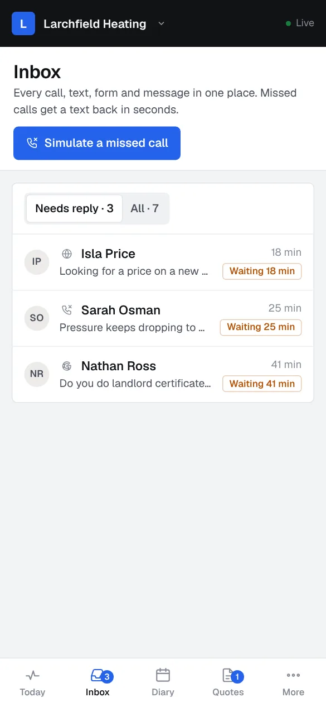

The blocked drain at ten at night still gets an answer.
A drainage engineer’s website needs the emergency number at the top of every page, the work you cover, from blocked drains and toilets to CCTV surveys and repairs, and a way to book a survey online. It should then answer every call you miss with a text and keep each job and report on one record, because drainage work arrives urgent and the customer keeps ringing until someone answers.

What should a website for drainage engineers do?
- The emergency number at the top of every page, and the hours you take call-outs.
- The work you cover: blocked drains, toilets and sinks, jetting, CCTV surveys, repairs and relining, for homes and businesses.
- Online booking for planned work such as CCTV surveys, with a note of what the customer receives afterwards.
- Stills from survey footage explained in plain words, so a homeowner understands what they are paying for.
- The areas you cover, your insurance and any trade body you belong to.
How do customers choose a drainage engineer?
Most drainage work starts with a problem that will not wait: a blocked toilet, water backing up in the kitchen, a smell outside the back door. People search with the problem, ring the first number that looks local and keep ringing until a person picks up. Other work is planned: a CCTV survey before buying a house, a repair after a survey, or a landlord or managing agent with several properties. The urgent calls come in the evenings and at weekends, often while you are already on a job with your hands full.
The three automations that matter most
Missed-call text-back
Someone with a blocked drain rings until a person answers. A text straight back saying their call is in, asking for the address and a photo, stops them ringing the next number.
How it worksService reminders
A drain that has blocked once often blocks again. A reminder for a maintenance jet or a repeat survey, sent when it is due, brings the work back without a call.
How it worksReview requests
A homeowner rescued from a flooded kitchen is grateful that evening. A review asked for once the job is done reads well to the next person searching in a hurry.
How it worksTry it as a drainage engineer
The live demos, set up for drainage engineers with a made-up business. You play the customer, then see what you would see.

Missed call, booked
Call your own business, let it ring out, and watch the text turn into a booking with a deposit.Try it About a minute · works on your phone
Book and pay a deposit
Book a job on your own website at 10pm, pay the deposit, then find it in your diary the next morning.Try itBuilds that fit
Working builds for made-up businesses. Open any of them on your phone and use it.
 Inbox and missed callsEvery call, text and form in one list. Missed calls get a text back in seconds.The system · six made-up businesses
Inbox and missed callsEvery call, text and form in one list. Missed calls get a text back in seconds.The system · six made-up businesses
 Reminders that rebookYearly services, MOTs and regular cuts remind the customer and book themselves.The system · six made-up businesses
Reminders that rebookYearly services, MOTs and regular cuts remind the customer and book themselves.The system · six made-up businesses
 Booking and the diaryCustomers book a real free time and pay a deposit. It lands in the right diary.The system · six made-up businesses
Booking and the diaryCustomers book a real free time and pay a deposit. It lands in the right diary.The system · six made-up businessesDrainage engineers: questions people ask
Can customers book a CCTV drain survey online?
Yes. They pick a date, give the address and the reason, for example buying a house or a drain that keeps blocking, and get a confirmation with what happens on the day.
What happens when an emergency call comes in while I am on a job?
If you cannot answer, the caller gets a text at once saying their call is in, with a link to send the address and a photo. You see it all in one place and ring back with the details in front of you.
Can I keep landlords and managing agents on one record?
Yes. Each client keeps its properties, past jobs and survey reports together, so a repeat call from the same agent shows the history before you arrive.
More in every question, answered.